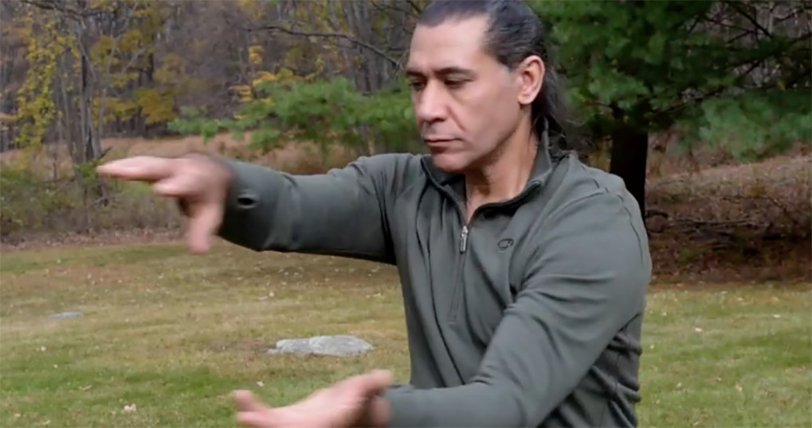

Instruction from experience
Learning the Move Like Dragon Method
As a teacher with over 15 years of experience in the field of Chinese Medicine, Marshall has developed a methodology that incorporates not only Acupuncture (needling), but Tui Na based body work techniques that render an effective, holistic approach to healing and well-being. He places an importance on maintaining a relaxed, structurally aligned physical ability, utilizing underlying principles of Qi Gong to help prevent the fatigue that can overtime have a deleterious effect on a body work provider.
Certification
Marshall is a graduate of Tri-State College of Acupuncture (2002), where he is currently conducting Grand Rounds. In addition, Marshall is developing a Tui Na Bodywork curriculum that can be applied towards fulfilling continuing education unit (CEU's) requirements.
© Move Like Dragon